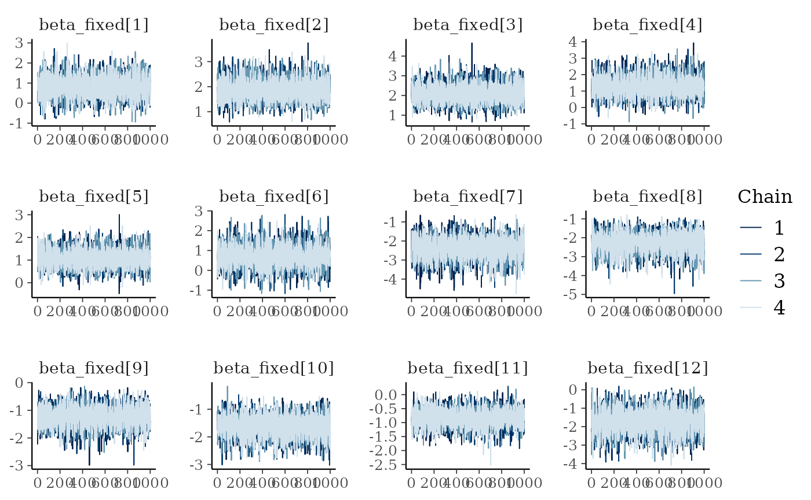
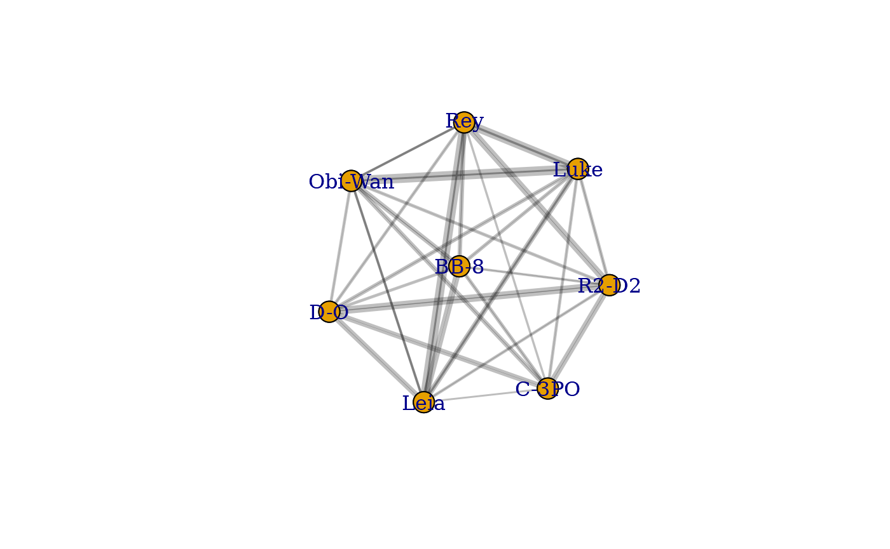
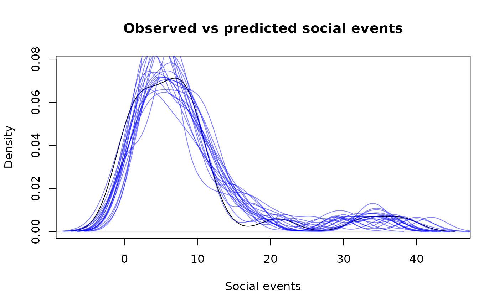

library(bisonR)
#> Loading required package: cmdstanr
#> This is cmdstanr version 0.5.2
#> - CmdStanR documentation and vignettes: mc-stan.org/cmdstanr
#> - CmdStan path: /home/runner/.cmdstan/cmdstan-2.29.2
#> - CmdStan version: 2.29.2
#> Loading required package: igraph
#>
#> Attaching package: 'igraph'
#> The following objects are masked from 'package:stats':
#>
#> decompose, spectrum
#> The following object is masked from 'package:base':
#>
#> union
data("binary_ex1")
df <- binary_ex1
head(df)
#> node_1 node_2 type_1 type_2 event location
#> 1 Rey Leia Lifeform Lifeform 1 B
#> 2 Rey Leia Lifeform Lifeform 1 F
#> 3 Rey Leia Lifeform Lifeform 0 C
#> 4 Rey Leia Lifeform Lifeform 1 C
#> 5 Rey Leia Lifeform Lifeform 1 B
#> 6 Rey Leia Lifeform Lifeform 1 B
priors <- get_default_priors("binary")
priors
#> $fixed
#> [1] "normal(0, 1)"
#>
#> $random_mean
#> [1] "normal(0, 1)"
#>
#> $random_std
#> [1] "half-normal(1)"
priors$fixed <- "normal(0, 1)"
priors
#> $fixed
#> [1] "normal(0, 1)"
#>
#> $random_mean
#> [1] "normal(0, 1)"
#>
#> $random_std
#> [1] "half-normal(1)"
fit_edge <- edge_model((event | 1) ~ dyad(node_1, node_2), data=df, data_type="binary", priors=priors)
#> Running MCMC with 4 parallel chains...
#>
#> Chain 1 finished in 3.3 seconds.
#> Chain 2 finished in 3.5 seconds.
#> Chain 3 finished in 3.5 seconds.
#> Chain 4 finished in 3.4 seconds.
#>
#> All 4 chains finished successfully.
#> Mean chain execution time: 3.4 seconds.
#> Total execution time: 3.6 seconds.
plot_trace(fit_edge)
summary(fit_edge) # 0.810 -0.051 1.740
#> === Fitted BISoN edge model ===
#> Data type: binary
#> Formula: (event | 1) ~ dyad(node_1, node_2)
#> Number of nodes: 8
#> Number of dyads: 28
#> Directed: FALSE
#> === Edge list summary ===
#> median 5% 95%
#> Rey <-> Leia 0.803 -0.059 1.743
#> Rey <-> Obi-Wan 1.857 1.247 2.556
#> Leia <-> Obi-Wan 2.066 1.361 2.888
#> Rey <-> Luke 1.285 0.275 2.420
#> Leia <-> Luke 1.052 0.421 1.793
#> Obi-Wan <-> Luke 0.716 -0.180 1.636
#> Rey <-> C-3PO -2.368 -3.372 -1.459
#> Leia <-> C-3PO -2.240 -3.152 -1.479
#> Obi-Wan <-> C-3PO -1.223 -1.923 -0.574
#> Luke <-> C-3PO -1.592 -2.281 -0.974
#> Rey <-> BB-8 -0.830 -1.396 -0.328
#> Leia <-> BB-8 -1.688 -2.880 -0.646
#> Obi-Wan <-> BB-8 -0.774 -1.394 -0.211
#> Luke <-> BB-8 -1.515 -2.277 -0.881
#> C-3PO <-> BB-8 -1.209 -1.799 -0.658
#> Rey <-> R2-D2 -1.180 -2.093 -0.329
#> Leia <-> R2-D2 -1.307 -1.895 -0.798
#> Obi-Wan <-> R2-D2 -1.753 -2.562 -1.048
#> Luke <-> R2-D2 -1.157 -1.715 -0.650
#> C-3PO <-> R2-D2 -1.301 -2.237 -0.506
#> BB-8 <-> R2-D2 -1.480 -2.056 -0.949
#> Rey <-> D-O -1.443 -2.063 -0.849
#> Leia <-> D-O -1.378 -2.301 -0.575
#> Obi-Wan <-> D-O -1.734 -2.486 -1.069
#> Luke <-> D-O -1.318 -1.999 -0.707
#> C-3PO <-> D-O -1.620 -2.629 -0.726
#> BB-8 <-> D-O -2.187 -3.271 -1.289
#> R2-D2 <-> D-O -0.569 -1.318 0.138
plot_network(fit_edge, lwd=2)
plot_predictions(fit_edge, num_draws=20)